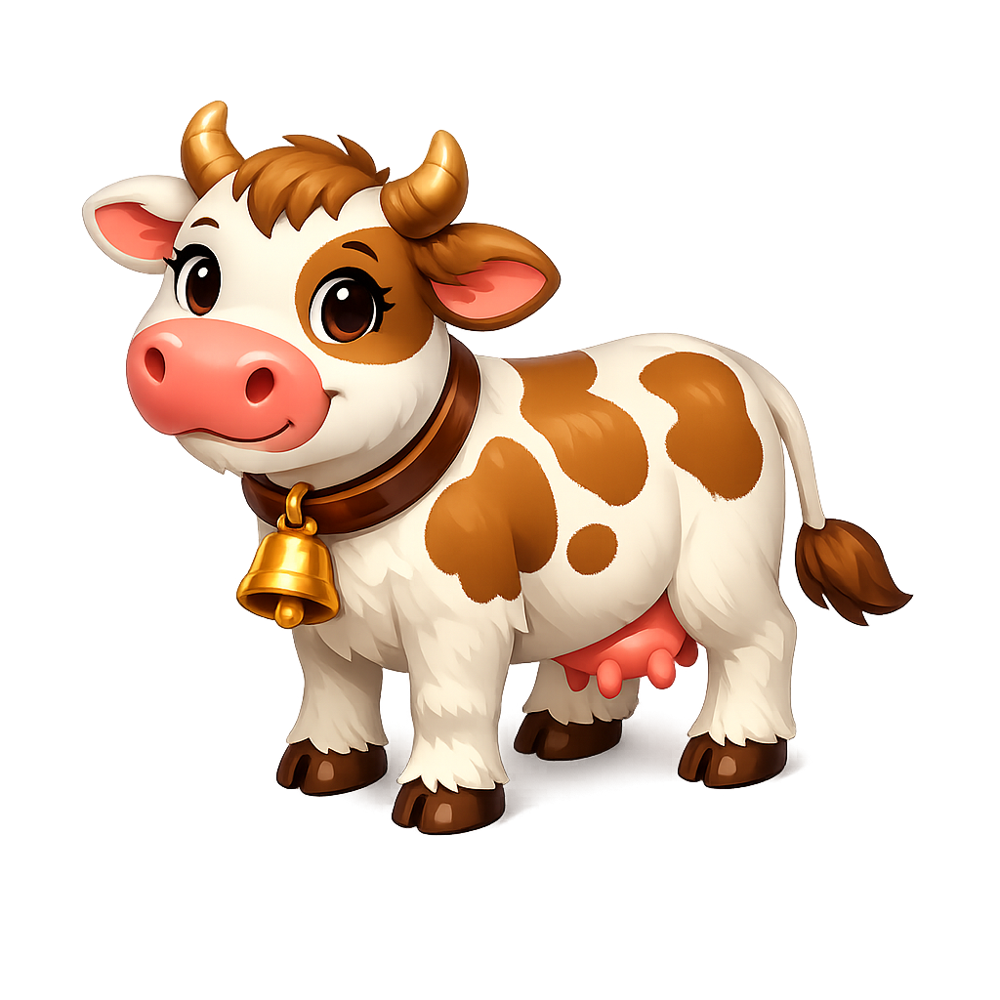
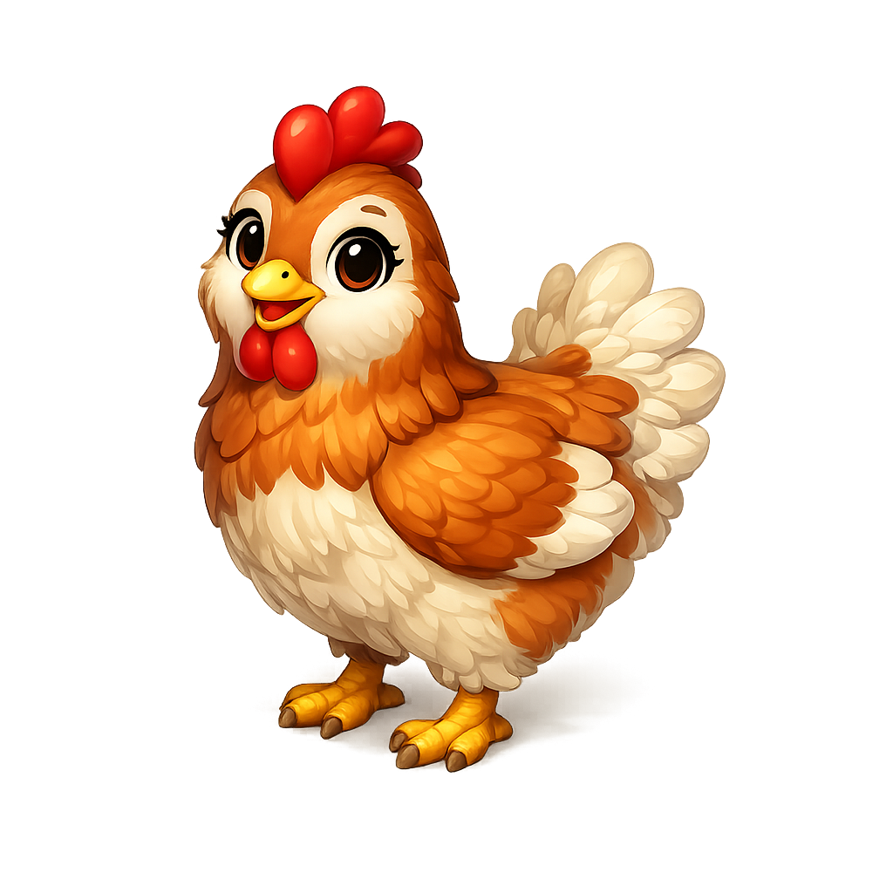
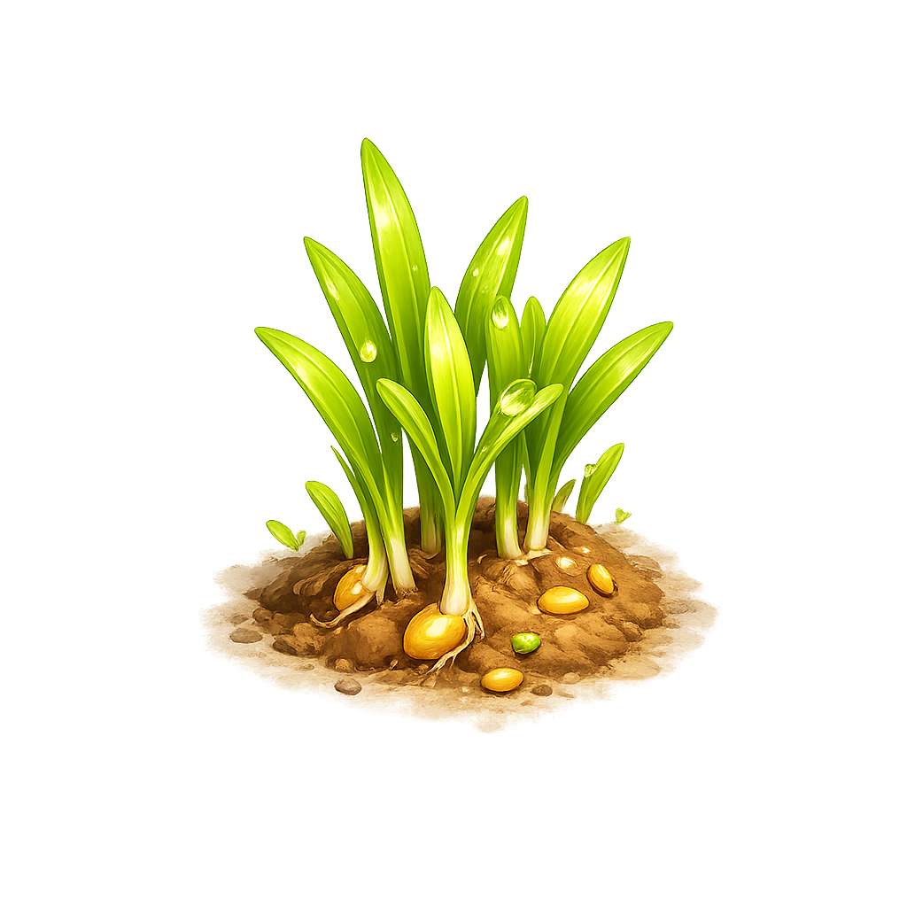
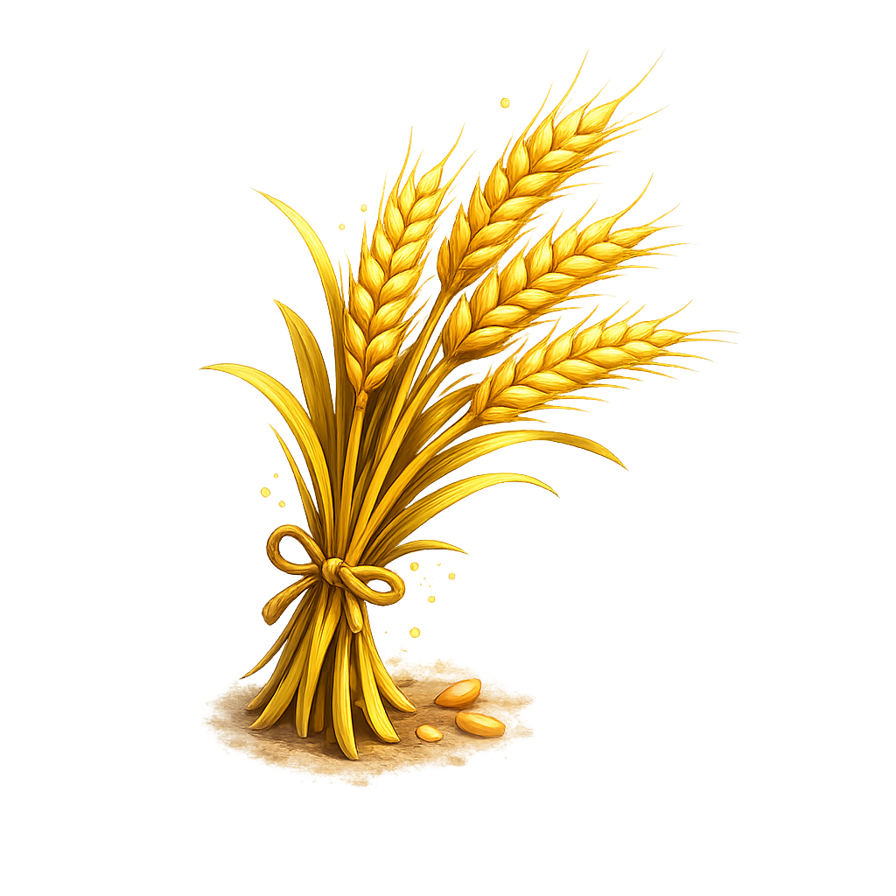
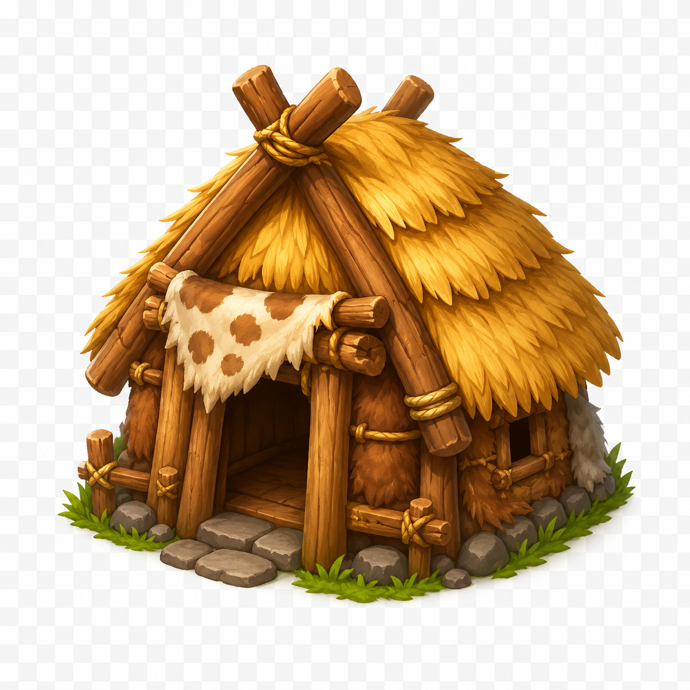
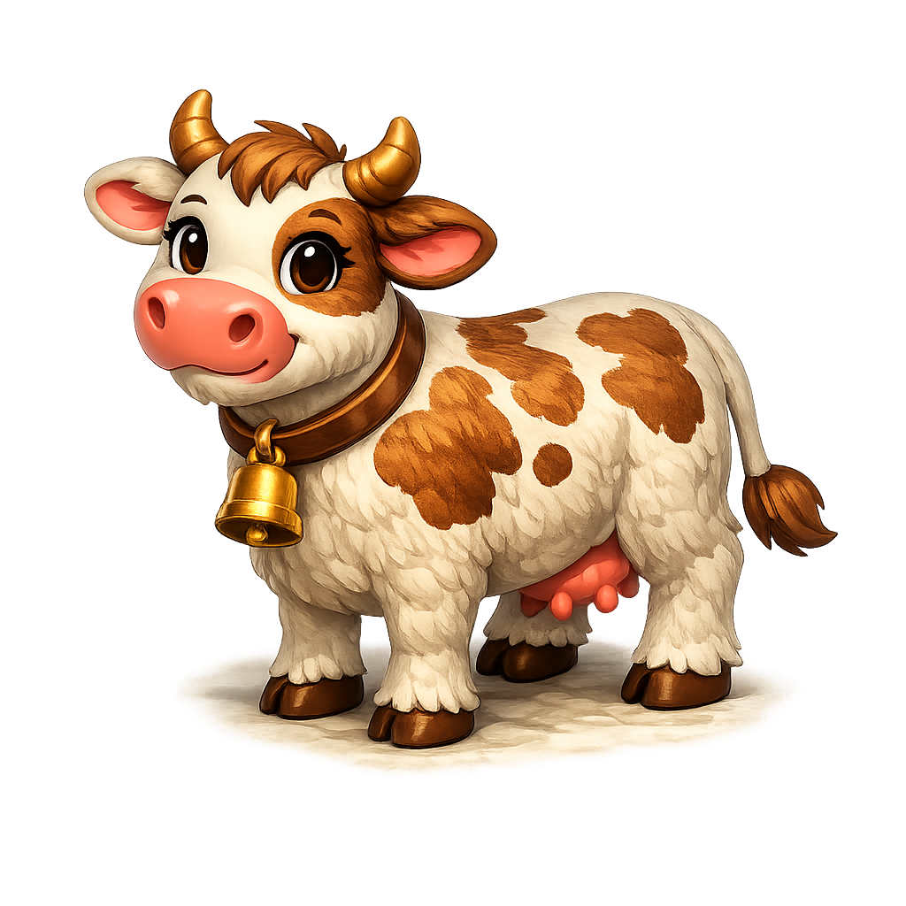
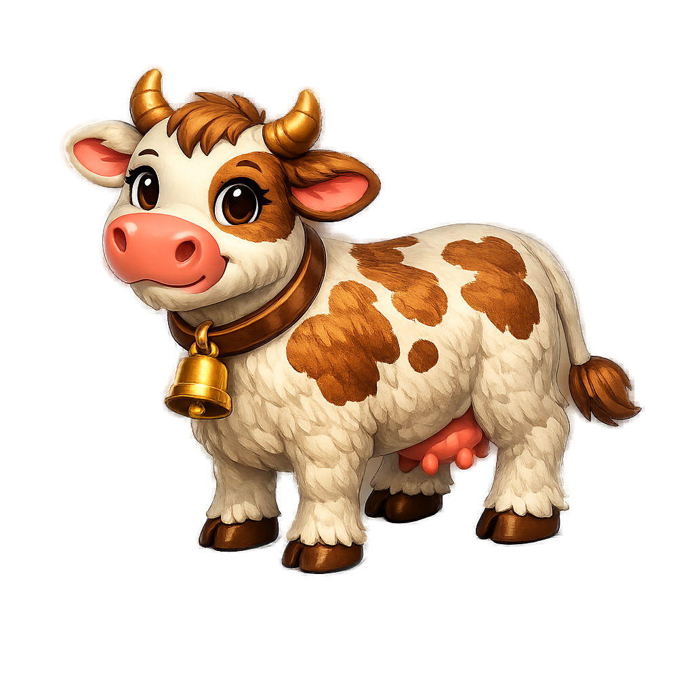
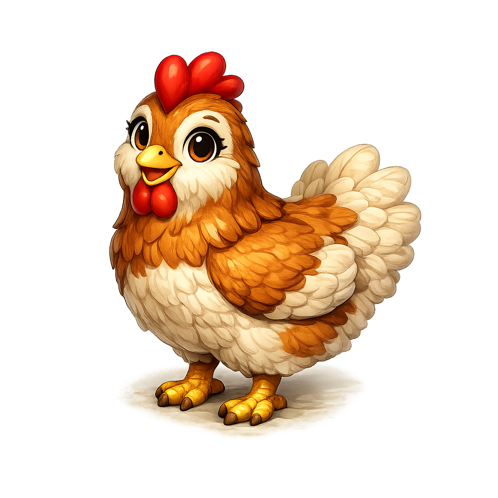
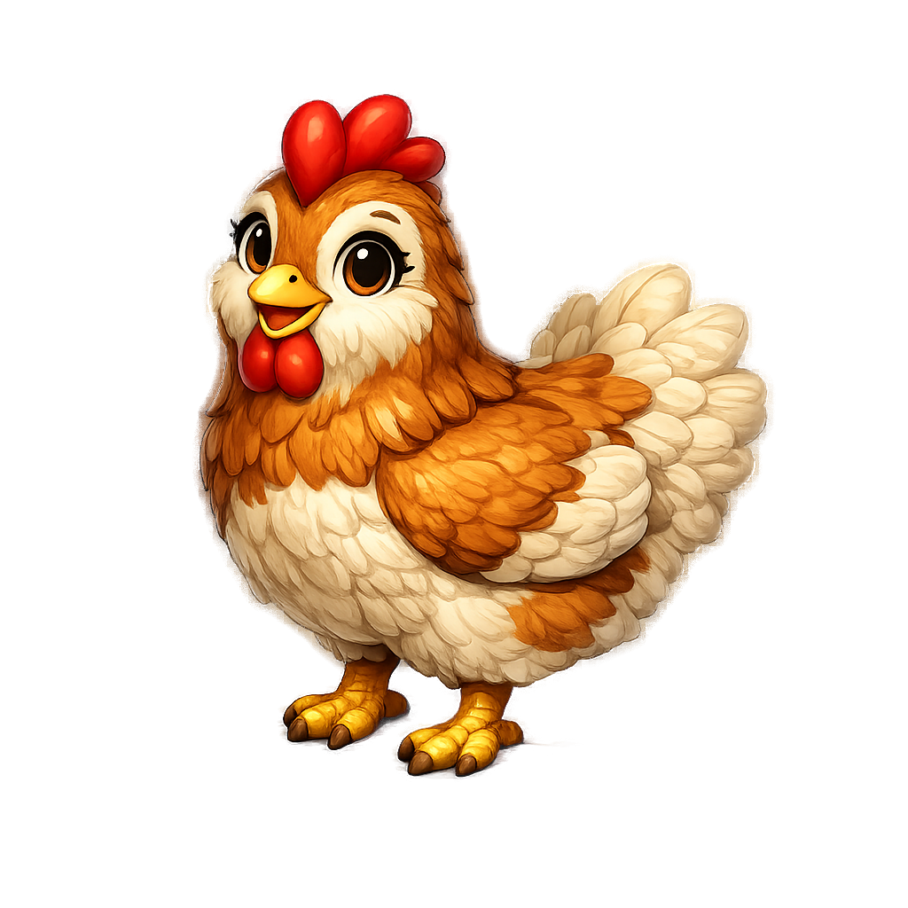
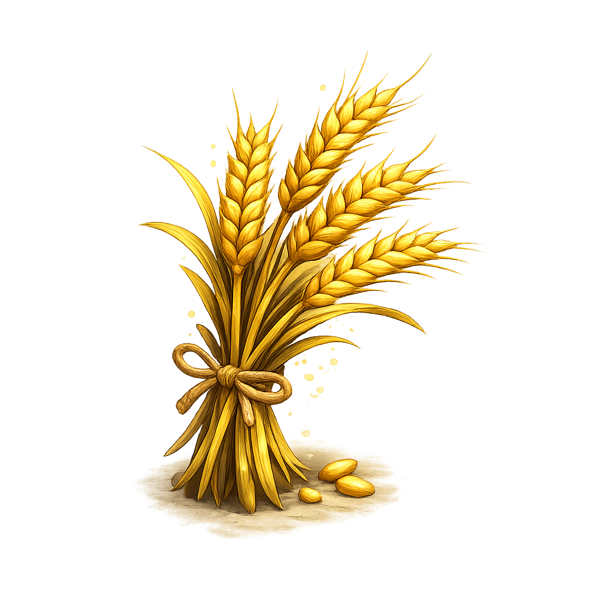

Grafik-Probe für Liams Hof — gefällt dir der Stil?
5 Probe-Grafiken, groß auf Schachbrett (zeigt echte Transparenz) und klein auf Wiese (Spiel-Wirkung)

Kuh
Niedlicher Cartoon-Stil, leichter Glow-Rand
Transparenz OK

Huhn
Passt perfekt zur Kuh (Farben, Augen, Licht)
Transparenz OK

Weizen (jung)
Junge Triebe mit Erdhügel, grüner Glow-Halo
Transparenz OK

Weizen (reif)
Goldenes Bündel, deutlicher Leucht-Halo
Transparenz OK

Hütte (Steinzeit)
Bester Spielgrafik-Look — ABER Schachbrett ist ins Bild eingebacken, kein echter Alphakanal!
Keine Transparenz
So wirkt es im Spiel (auf grüner Wiese)
Kleine Größe wie später auf dem Hof-Spielfeld
Kuh
Huhn
Weizen jung
Weizen reif
Hütte (Schachbrett sichtbar!)
Etappe 2 — Neue Grafiken im Hütte-Stil (v2)
Kuh, Huhn und reifer Weizen komplett neu im hochwertigen 3D-Mobile-Game-Look der Steinzeit-Hütte — jeweils Original und freigestellte Fassung (_frei).

Kuh v2 (Original)
3D-Render im Hütte-Stil, echter Alphakanal direkt aus ChatGPT
Transparenz OK

Kuh v2 (_frei)
Mit rembg neu freigestellt: Boden-Schatten entfernt, sauberer Cutout (echter Alphakanal)
rembg · transparent

Huhn v2 (Original)
Passt zur Kuh: gleiche Beleuchtung, satte Farben, echter Alphakanal
Transparenz OK

Huhn v2 (_frei)
Mit rembg neu freigestellt: Boden-Schatten entfernt, sauberer Cutout (echter Alphakanal)
rembg · transparent

Weizen reif v2 (Original)
Goldenes Bündel mit Bindfaden, warme Goldtöne, echter Alphakanal
Transparenz OK

Weizen reif v2 (_frei)
Original-Alpha behalten: rembg getestet, zerstört aber die hellen Ähren (schneidet sie als Hintergrund weg) → Original war schon sauber transparent
transparent (Original)
Bodenkacheln (nahtlos kachelbar)
256×256, prozedural mit PIL erzeugt — jede Kachel als 3×3-Feld gezeigt, damit man sieht: keine sichtbaren Nähte
boden_acker.png
Brauner Ackerboden mit Pflugfurchen und Erdklumpen, nahtlos tileable
Nahtlos · fertig
boden_wiese.png
Saftig-grüne Wiese mit leichter Halm-Struktur, nahtlos tileable
Nahtlos · fertig
So wirkt Etappe 2 im Spiel (auf der echten Wiesen-Kachel)
Freigestellte Tiere auf der neuen boden_wiese.png-Textur — so sieht es später auf dem Hof-Spielfeld aus
Kuh v2
Huhn v2
Weizen reif v2
…und auf dem Acker (boden_acker.png):
Kuh v2
Huhn v2
Weizen reif v2